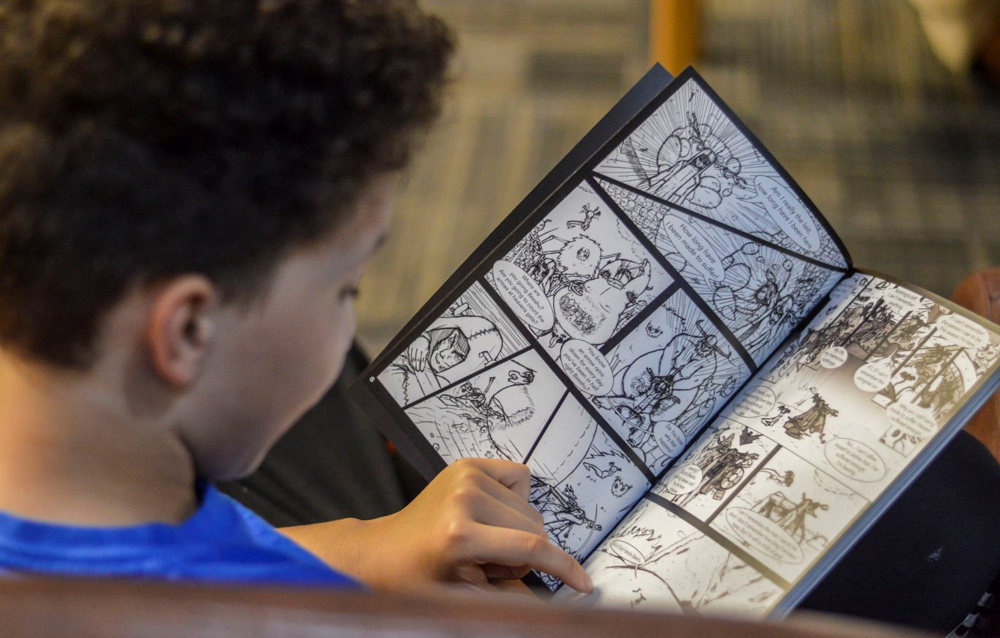
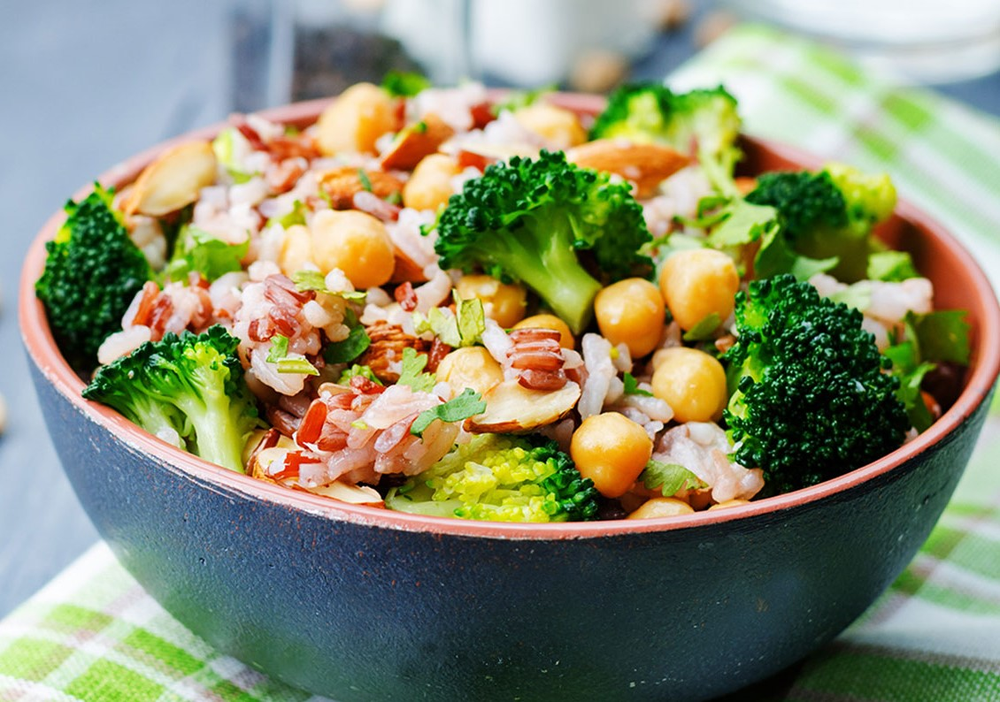
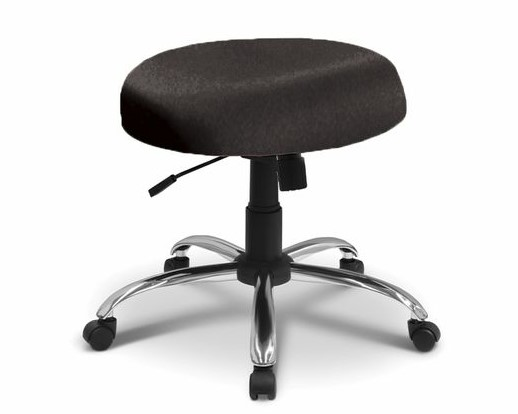

Coisas que gosto |
Coisas que não gosto |
Ir ao cinema

- Gosto de assistir filmes
- Experiência diferente e única
|
Ar condicionado
- Tenho rinite alérgica
- Prejudica as vias respiratórias
|
Ler quadrinhos

- Desenhos legais
- Leitura diferente
|
Ficar doente
- Incomoda
- Demora para ficar melhor
|
Cozinhar

- Boa distração
- Testa minha criatividade
- Dá pra comer enquanto cozinha
|
Assistir Jurassic World: Domínio

- Roteiro e história são ruim
- Direcão é ruim
- Filme não tem propósito de existência
|
Ler livros
- Proporciona silêncio
- Conhecemos histórias diferentes
|
Pinhão
- Textura ruim
- Gosto não muito bom
|
Comer salada

- Muito saudável
- Verduras e vegetais são saborosos e bons
|
Sentar em uma cadeira sem encosto

- As costas ficam curvadas
- Causa dores nas costas
|